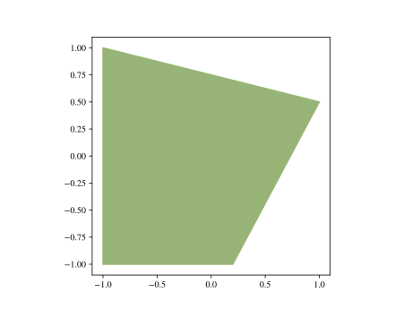
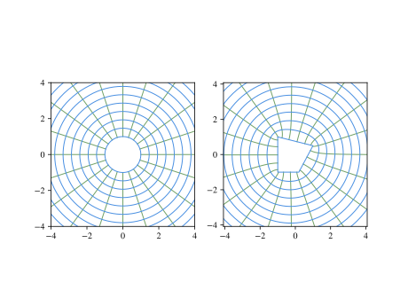
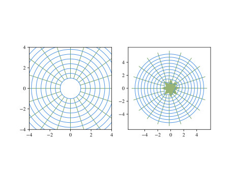
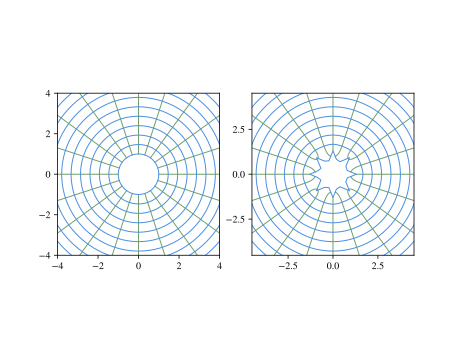

Basic usage
Let's first initiate the module. We'll also initiate plotting with Plots.jl, using PyPlot as the backend for the actual output.
julia> using SchwarzChristoffel
julia> using Plots
julia> pyplot()
Plots.PyPlotBackend()Now, we create a polygon shape by specifying its vertices. Note that the vertices must be provided in counter-clockwise order.
julia> x = [-1.0,0.2,1.0,-1.0]; y = [-1.0,-1.0,0.5,1.0];
julia> p = Polygon(x,y)
Polygon with 4 vertices at
(-1.0,-1.0) (0.2,-1.0) (1.0,0.5) (-1.0,1.0)
interior angles/π = [0.5, 0.656, 0.422, 0.422]Let's plot the polygon to make sure it matches what we wanted.
julia> plot(p)
Plot{Plots.PyPlotBackend() n=1}
Now, we create the map from the unit circle to the polygon.
julia> m = ExteriorMap(p)
Schwarz-Christoffel map of unit circle to exterior of polygon with 4 verticesLet's visualize what we've constructed. Here, we will inspect the mapping from the exterior of the unit circle to the exterior of the polygon.
julia> plot(m)
Plot{Plots.PyPlotBackend() n=60}
We can now easily evaluate the map at any place we like. It could be evaluated outside the unit circle:
julia> ζ = 1.2 + 0.1im
1.2 + 0.1im
julia> m(ζ)
1.0849884084568373 + 0.2410831373600964imor it could be evaluated inside the unit circle:
julia> ζ = 0.5 + 0.1im
0.5 + 0.1im
julia> m(ζ;inside=true)
-1.789702985840997 - 1.2882910977565625imWe can also evaluate the first and second derivative of the map at any place(s). Let's evaluate at a range of points outside the circle.
julia> dm = DerivativeMap(m)
d/dζ of Schwarz-Christoffel map of unit circle to exterior of polygon with 4 vertices
julia> ζ = collect(1.1:0.1:2.0) + 0.1im
10-element Array{Complex{Float64},1}:
1.1+0.1im
1.2+0.1im
1.3+0.1im
1.4+0.1im
1.5+0.1im
1.6+0.1im
1.7+0.1im
1.8+0.1im
1.9+0.1im
2.0+0.1im
julia> dz,ddz = dm(ζ);
julia> dz
10-element Array{Complex{Float64},1}:
0.872356-0.394475im
0.901724-0.289355im
0.925562-0.217994im
0.944059-0.168264im
0.958255-0.132657im
0.96919-0.106522im
0.977695-0.0869128im
0.984389-0.0719115im
0.989723-0.0602376im
0.994025-0.0510144imNow let's try a more interesting shape. Here's a star-shaped body
julia> n = 8; dθ = 2π/(2n)
0.39269908169872414
julia> θ = collect(0:dθ:2π-dθ)
16-element Array{Float64,1}:
0.0
0.392699
0.785398
1.1781
1.5708
1.9635
2.35619
2.74889
3.14159
3.53429
3.92699
4.31969
4.71239
5.10509
5.49779
5.89049
julia> w = (1+0.3cos.(n*θ)).*exp.(im*θ)
16-element Array{Complex{Float64},1}:
1.3+0.0im
0.646716+0.267878im
0.919239+0.919239im
0.267878+0.646716im
7.9602e-17+1.3im
-0.267878+0.646716im
-0.919239+0.919239im
-0.646716+0.267878im
-1.3+1.59204e-16im
-0.646716-0.267878im
-0.919239-0.919239im
-0.267878-0.646716im
-2.38806e-16-1.3im
0.267878-0.646716im
0.919239-0.919239im
0.646716-0.267878im
julia> p = Polygon(w)
Polygon with 16 vertices at
(1.3,0.0) (0.6467156727579007,0.26787840265556284) (0.9192388155425119,0.9192388155425117) (0.26787840265556284,0.6467156727579007) (7.960204194457797e-17,1.3) (-0.2678784026555628,0.6467156727579007) (-0.9192388155425117,0.9192388155425119) (-0.6467156727579007,0.2678784026555629) (-1.3,1.5920408388915593e-16) (-0.6467156727579008,-0.26787840265556273) (-0.919238815542512,-0.9192388155425117) (-0.26787840265556323,-0.6467156727579005) (-2.3880612583373386e-16,-1.3) (0.267878402655563,-0.6467156727579007) (0.9192388155425116,-0.919238815542512) (0.6467156727579005,-0.26787840265556323)
interior angles/π = [0.248, 1.502, 0.248, 1.502, 0.248, 1.502, 0.248, 1.502, 0.248, 1.502, 0.248, 1.502, 0.248, 1.502, 0.248, 1.502]
julia> plot(p)
Plot{Plots.PyPlotBackend() n=1}
Construct the map and plot it
julia> m = ExteriorMap(p)
Schwarz-Christoffel map of unit circle to exterior of polygon with 16 vertices
julia> plot(m)
Plot{Plots.PyPlotBackend() n=60}